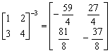

二階矩陣正整數冪(I)
程式新版
更新日期: 2011年12月29日
程式可以計算一個2×2矩陣的正整數冪及其逆矩陣(負整數冪)。 另外若果輸入數據為整數時，逆矩陣(負整數冪)答案會以分數形式表示，建議將計數機預先設定為假分數形式表示(按 SHIFT SETUP → → 2 )。
另外網頁尾的附錄程式則只可以計算矩陣的正整冪，不能計算逆矩陣，但可以用作計算矩陣的連續數冪，即在顯示答案後，再輸入整數冪，程式會自動計算答案矩陣的正整數冪，這樣有可能可以減少程式重複計算的次數，因而加快運算的速度。
程式需要在 REG Lin 模式下執行，因此在選擇新程式位置後，按 5 1 選用REG Lin模式。
注意: 藍色的英文字為統計模式中的變數(maxX 按 shift 2 2 2，maxY 按 shift 2 2 → 2，n 按 Shift 1 3)。
程式 (125 bytes)
FreqOn: ?→X: ?→Y: ?→C:?→B: X , Y ; C DT:
Pol(1, 0: 0→C: 1→D: ?→M: While M:
maxX X+ maxY C→A: nX + BC→C: A→X:
maxX Y + maxY D→A: nY + BD→D: A→Y:
M - 1→M: WhileEnd: X◢ Y◢ C◢ D◢ 1┘(XD - YC→A:
DA◢ -YA◢ -CA◢ XA
註: 程式使用重複計算方法，所以冪數越大，計算時間越長。
例題: 計算以下矩陣及其逆矩陣:

按 Prog 1 再按 1 EXE 2 EXE 3 EXE 4 EXE 3 EXE (顯示37)
EXE (顯示54) EXE (顯示81) EXE (顯示118) EXE (顯示 -59/4)
EXE (顯示 27/4) EXE (顯示 81/8) EXE (顯示 -37/8)
所以


附錄程式
程式需要在 REG Lin 模式下執行，因此在選擇新程式位置後，按 5 1 選用REG Lin模式。
注意: 藍色的英文字為統計模式中的變數(maxX 按 shift 2 2 2，maxY 按 shift 2 2 → 2，n 按 Shift 1 3)。
程式 (108 bytes)
?→X: ?→Y: ?→C: ?→B: Lbl 0: FreqOn: X , Y ; C DT:
Pol(1, 0: 0→C: 1→D: ?→M: While M:
maxX X+ maxY C→A: nX + BC→C: A→X:
maxX Y + maxY D→A: nY + BD→D: A→Y:
M - 1→M: WhileEnd: X◢ Y◢ C◢ D→B◢ Goto 0
返回 CASIO fx-50FH、fx-3650P II、fx-50FH II及fx-50F PLUS 程式集